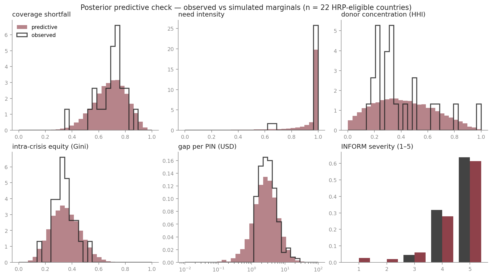

Which humanitarian crises are most overlooked?
When nearly every response is underfunded, a single coverage ratio no longer discriminates between crises. Geo-Insight treats overlookedness as a latent scalar θ and infers its posterior from six observed signals through a hierarchical Bayesian observation model. Every ranking carries a calibrated 90 % credible interval; the variational fit is validated against NUTS on every run. Externally validated against CERF Underfunded Emergencies and CARE Breaking the Silence.
Full methodology: read on this site · download PDF
When every response is underfunded, "underfunded" stops being useful.
Nineteen country contexts now sit below fifty per cent coverage. A single coverage ratio can't distinguish them; the useful variation is no longer whether a crisis is underfunded, but how, and for whom.
Seventy-one properties in five derivation levels. Every derived value declares its formula, its source dataset, and its known failure modes before any value is computed.
The Level-5 outputs are not a weighted sum. They are the posterior over the latent overlookedness θ, fit by a hierarchical Bayesian observation model with sign-constrained slopes and a population-level prior that pools partial-data countries. Three likelihoods, matched to attribute support: Beta regression for the four bounded fractions, log-normal for the per-PIN gap, ordered logistic for INFORM severity.
Variational inference (AutoMultivariateNormal) runs in three seconds and is calibrated against NUTS on every fit (Spearman ρ = 0.89 on posterior medians). Sparse-data countries get wider posteriors structurally — not because we down-weight them by hand, but because the likelihood has fewer terms to sharpen the posterior on θ.
Overlookedness is a latent scalar $\theta(u)$, never observed directly. Each of six attributes links to $\theta$ through a likelihood matched to its support. Slopes are sign-constrained positive, so larger attribute values mean more overlooked.
A Gaussian population prior on $\theta$ pools partial-data countries toward the global mean — sparse-data countries get wider posteriors structurally, not because we down-weight them by hand. Inference is variational (AutoMultivariateNormal, 3 s on CPU); every fit is calibrated against NUTS, the gold-standard MCMC reference, on the same model.

precision @ 10 against CERF UFE 2025 w1: half of the United Nations' March-2025 underfunded-emergency selections appear in our independent top-10. The variational posterior is calibrated against NUTS on every fit (Spearman ρ = 0.89 on posterior medians).
Candidate pool: 22 HRP-eligible countries (those with an active humanitarian response plan), the population CERF UFE itself draws from. Held-out test: a 2024-only fit predicts CERF's March-2025 selections at 4/10 without seeing any 2025 data.
Research narrative: motivation, methodology, semantic layer, four-cell typology, validation, limitations.
localhost:8000 →One tab per upstream dataset — HNO, HRP, FTS, CoD-PS, CBPF, INFORM — plus cross-dataset coverage.
localhost:8501 →Start with five featured views — rankings, typology, validation — or explore the full eight-lens grid.
localhost:8502